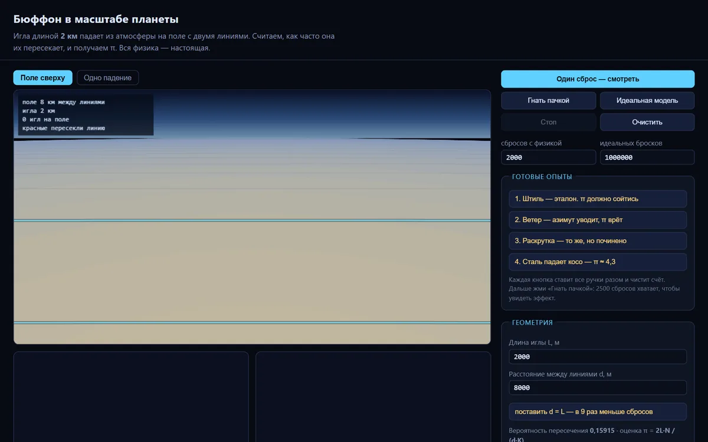
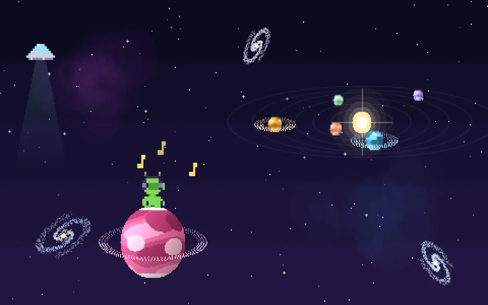
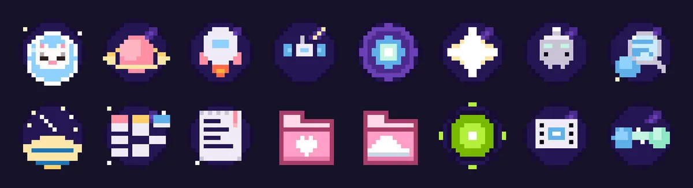
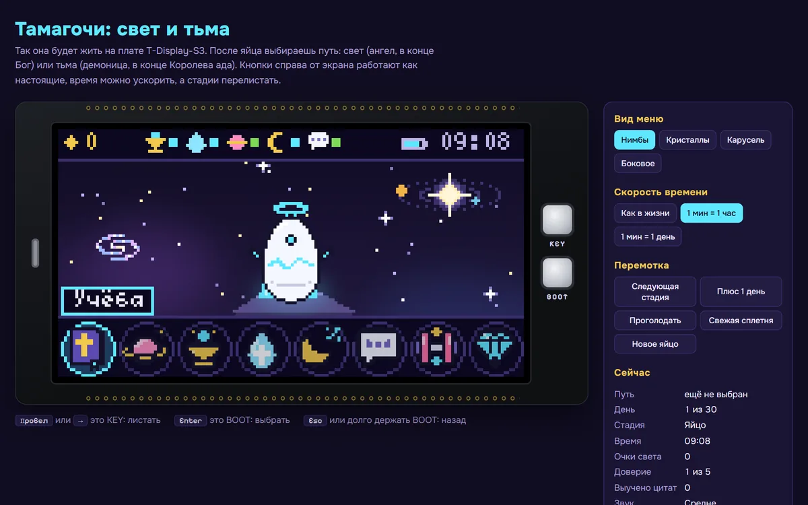

в 15 раз
больше запросов в топ-10 Яндекса
Типография, Краснодар · март 2025 - октябрь 2026
SEO-специалист · Middle · открыта к предложениям
Технический SEO, аналитика и удобство сайтов. Почти три года в digital-агентстве: медицина, производство, образование, типографии и HoReCa.
Цифры только за период, когда проект вела я, по одинаковому набору запросов. К каждому результату скриншоты из Топвизора и Метрики.
в 15 раз
больше запросов в топ-10 Яндекса
Типография, Краснодар · март 2025 - октябрь 2026

вдвое
больше запросов в топ-10, падение трафика остановлено
Клиника ЭКО, Москва · апрель - октябрь 2026

+60%
визитов из поиска за три месяца
Завод деталей турбин, Уфа · июль - сентябрь 2026

+35%
Детский образовательный центр, Москва · январь 2025 - октябрь 2026
Смотрю на сайт глазами пользователя и разработчика: прохожу путь по шагам, фиксирую доказательства и предлагаю, что исправить первым.
Баг-репорты
Ошибки из технического аудита оформлены для разработчиков: шаги, ожидаемый и фактический результат, серьёзность, приоритет, скриншоты и логи.
9
дефектов, 4 мешают пациенту связаться с клиникой
UX-разбор
Путь пациента на сайте сети клиник "Медси" от главной до записи, разобранный по 10 эвристикам Нильсена.
10
проблем, 4 из них мешают записаться совсем
Тестирование формы
Проверка по правилам самой Почты: граничные значения веса, размеров и ценности, исследовательские проверки и ответ сервера в DevTools.
8
дефектов на 22 проверки, главный занижает цену
Сравнительный анализ
Один сценарий в двух сервисах доставки продуктов: сколько шагов до оплаты, где видна цена, что мешает по пути.
4 / 7
нажатий, чтобы указать адрес
Доступность
Проверка по WCAG 2.1 уровня AA: автоматически инструментом axe-core и вручную с клавиатуры, контраст, подписи для экранного диктора.
11
находок, 5 из них нашла только вручную
Мои личные проекты, сделанные для себя в свободное время. Делаю их с Claude Code: ставлю задачу, проверяю результат и довожу до рабочего состояния.

На снимке обход этого самого сайта. Обходит сайт без ограничения на число страниц и сразу показывает дубли и пустые Title, Description, H1, битые ссылки с местом и анкором, цепочки редиректов, canonical на пагинации и поддомены. Использую в работе вместо платных краулеров.

Классический опыт с иглой в планетарном масштабе: игла длиной 2 км падает из стратосферы на поле с линиями. Честная физика падения, трёхмерная сцена Земли и атмосферы, статистика для оценки числа π.

Котик гуляет по рабочему столу и оставляет следы, звуки синтезируются в браузерном движке. Живые обои: пиксельный космос, который двигается под значками рабочего стола.

Набор из 15 значков для папок и программ в стиле пиксельного космоса и свой сборщик файлов .ico из рисунков 16x16.

Свой питомец на плате LILYGO T-Display-S3 с цветным экраном: прошивка на Arduino, готический дизайн персонажа.
Digital-агентство · февраль 2024 - октябрь 2026 · Краснодар, с июня 2026 удалённо
Ищу работу в QA и UX/UI-исследованиях. Из SEO беру главное: умение находить, где сайт ломается и мешает человеку, и доводить это до исправления. Удобнее всего написать в Telegram, отвечаю в течение дня.